Story first
Every home screen starts with a few sentences: who is absent, what is due, what went well. Then the charts.
Staff portal · MondayGood morning, Prishan. 1,186 of 1,248 students are in. Three things need you today.
Quad runs your whole school, from admissions and timetables to fees and report cards. And it keeps everyone who looks after a child connected: teachers share small good moments, parents see the school day as it happens, and nobody waits for a report card to find out how things are going.
School systems are good at records and bad at relationships. Parents hear nothing until something goes wrong, and teachers get messages at 10 pm. Circle uses the data a school already keeps to keep families close. Here is what that looks like on a Monday for Amaya, Year 4 Emerald.
The gate scan and the register fill in a ring of Amaya’s day on her mum’s phone. Lessons, lunch and the bus home appear as they happen. Nobody had to send a message.
Ms. Jayasinghe taps Amaya’s name, picks Photo, writes a line and tags the skill she noticed. Only Amaya’s family sees it, and only if the family has agreed to photos.
Amaya painted the canteen mural today! She chose the colours for the paddy fields herself.
Parents can invite up to four relatives to see moments. Grandparents never see fees, results, attendance or health, and can be removed with one tap.
Every teacher, the coach and the nurse, with what each is working on with Amaya and when they reply. Saying thank you is one tap, and it reaches the teacher.
Each week teachers post what the class is learning and one small thing to try at home. Amaya and her mum write a postcard to Grandma, tap We tried it, and Ms. Jayasinghe sees it the next morning.
A parent can still write at 19:30. Quad tells them kindly that it reaches the teacher at 07:00, and holds the teacher’s notifications until morning. Urgent safety alerts always go through.
Moments, the skills her teachers noticed, days in school, what the family tried at home, and one idea for the weekend.
Families choose who sees photos of their child. Nothing about health or safeguarding ever goes into Circle.
Open the interactive conceptTry the parent appOne view shows which classes are sharing good news and which families haven’t heard anything positive in two weeks. It is about families, never a league table of teachers.
| Year group | Emerald | Sapphire | Ruby |
|---|
Most school systems are a wall of modules and tables. Quad opens with plain sentences about what is happening and what needs doing, then the detail.
Every home screen starts with a few sentences: who is absent, what is due, what went well. Then the charts.
Quad notices students who have started slipping in attendance, behaviour, learning or homework, explains why, and suggests who should act. One click starts a support plan.
Ask in plain English and get an answer from your school’s own records, with the sources it used and a button to act on it.
Turn on the modules you need. Year groups, terms and grading come from your curriculum, so Quad says Year 4, Grade 4 or Form 1 the way your school does.
The staff portal runs the school on the web. The parent app keeps families close on iOS and Android. Both carry your school’s name, logo and colour. These are real screens from the prototypes.
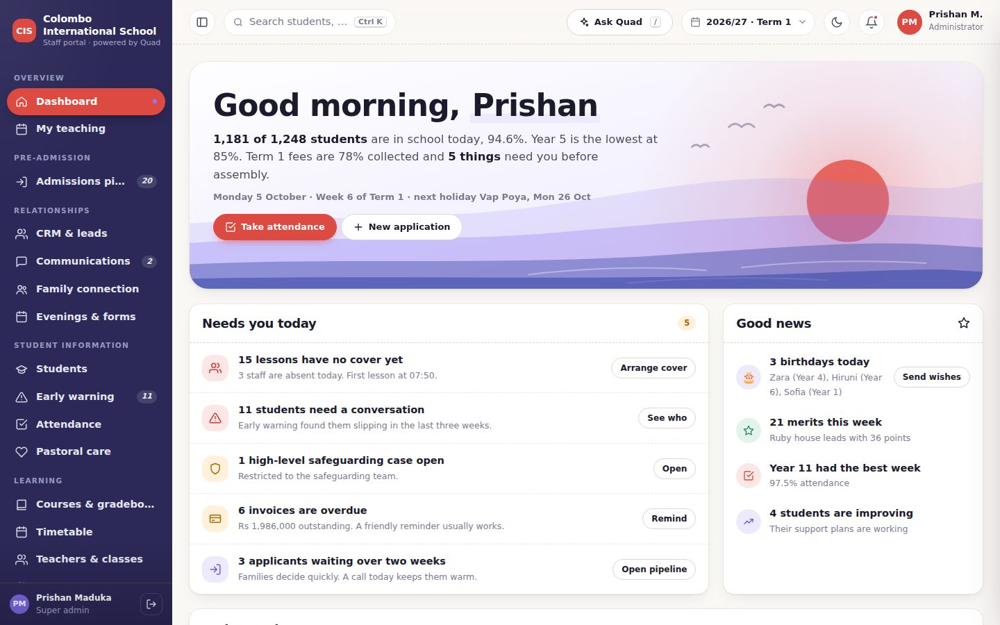
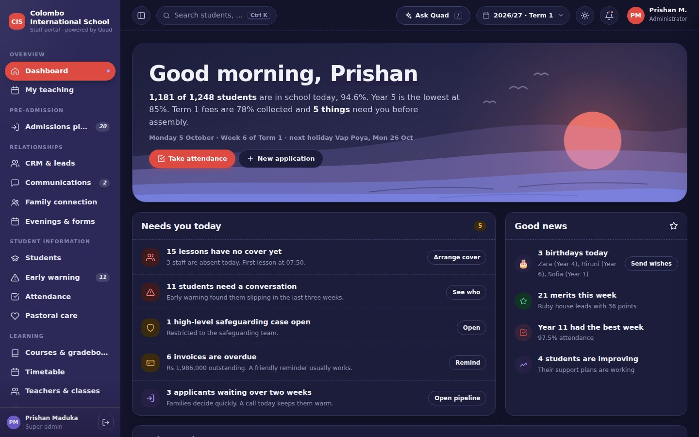
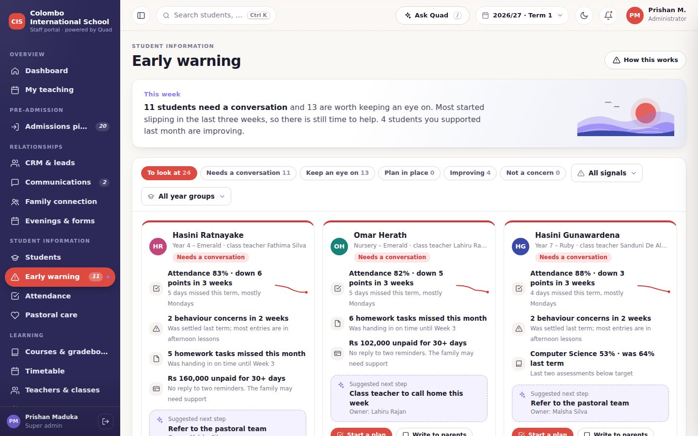
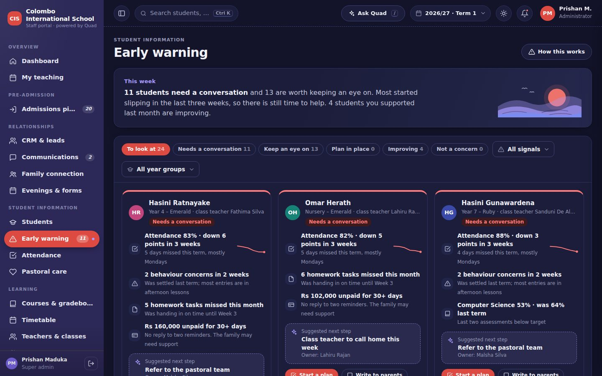
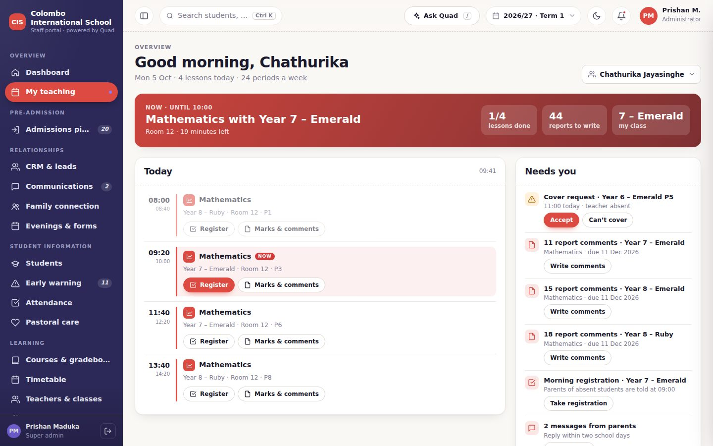
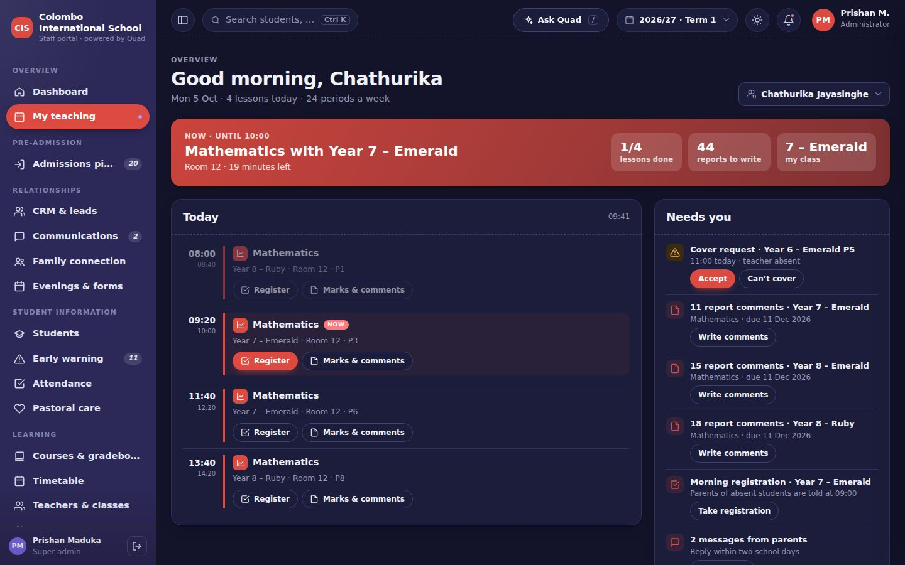
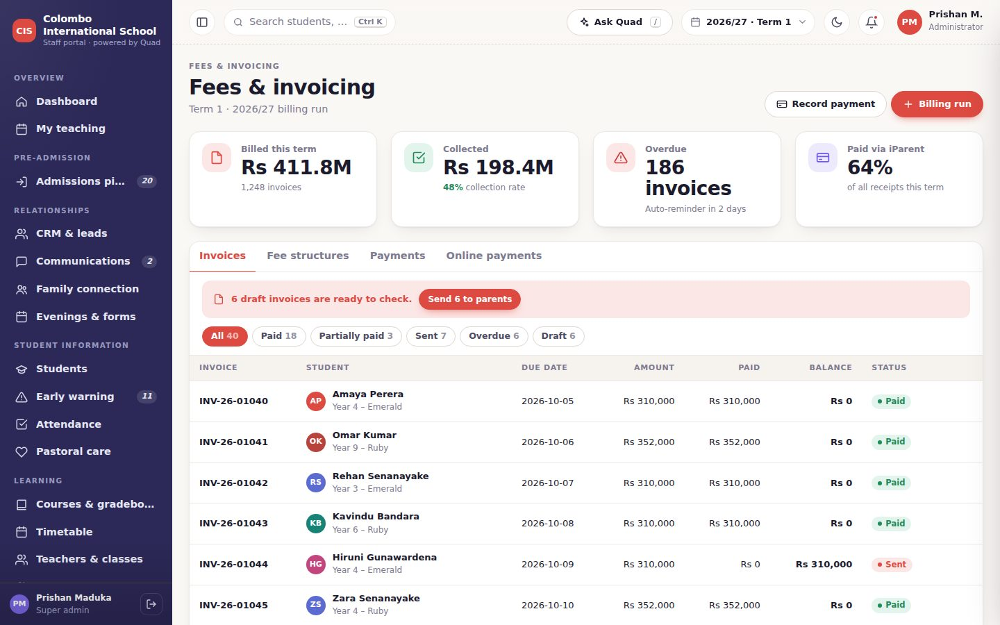
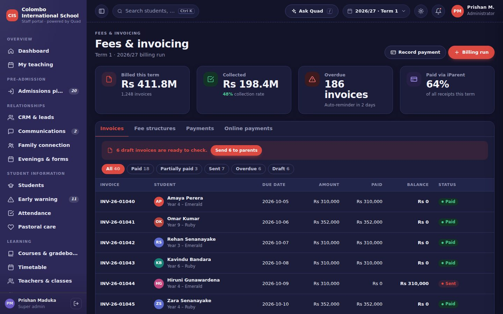
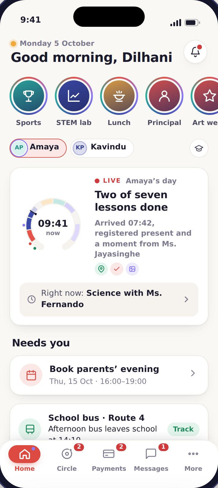
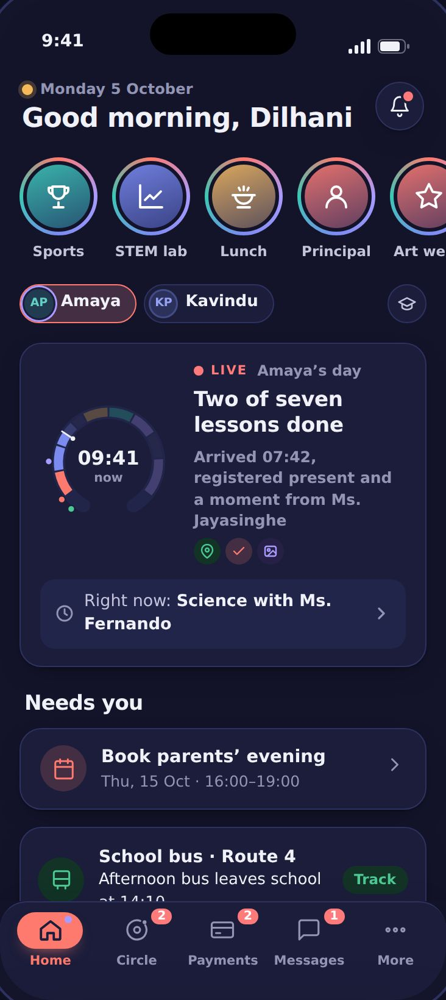
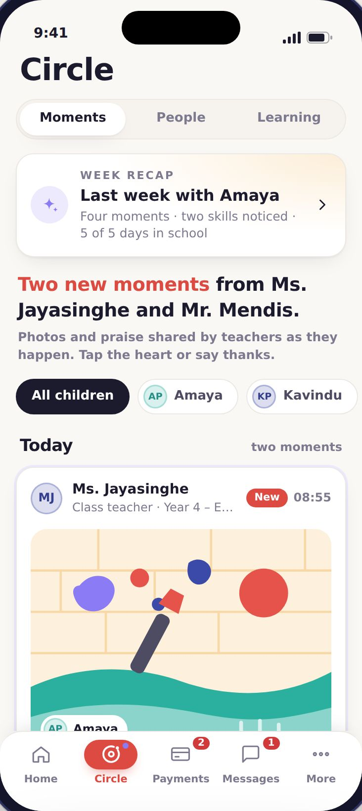
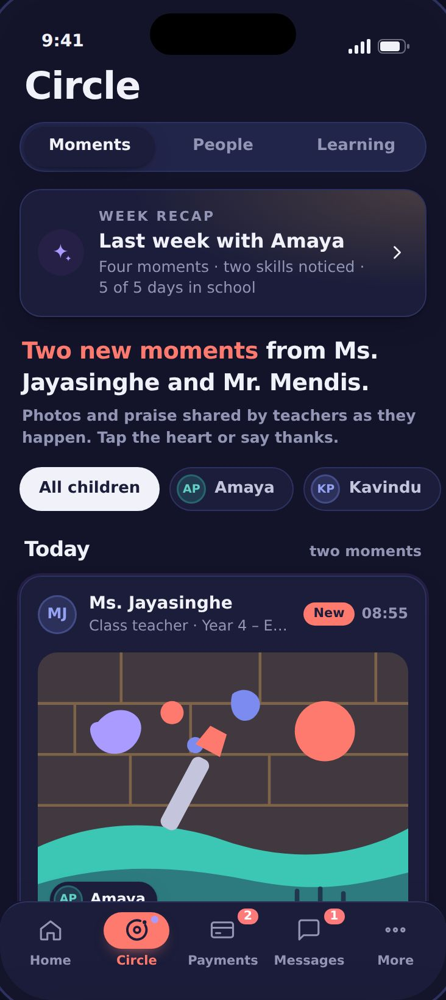
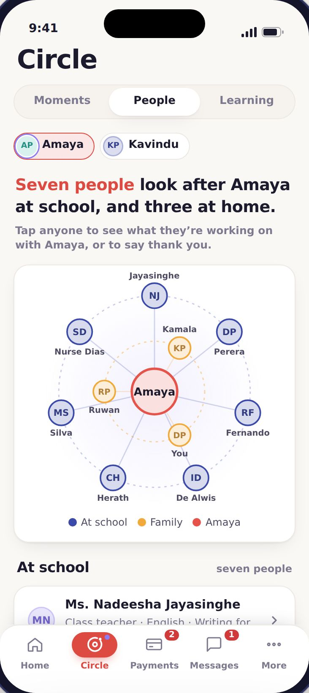
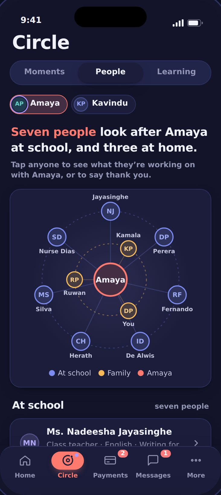
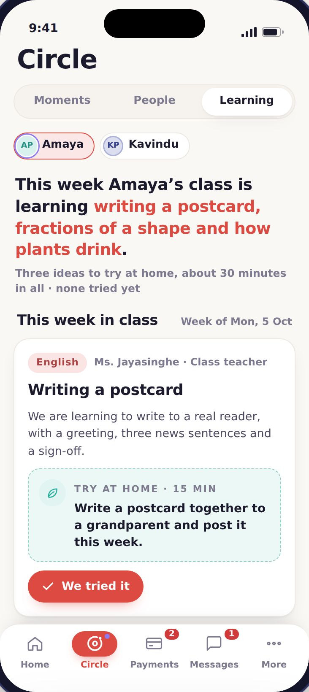
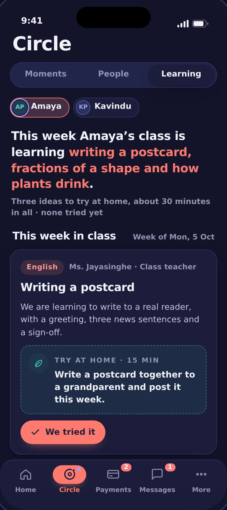
Quad is designed so each person sees only what they need, and every sensitive view is recorded.
We’ll set up a sample of your school, with your name, colours and curriculum, and show your team a full school day in Quad.